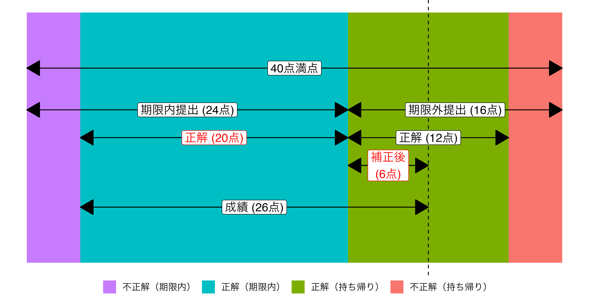

期末テスト実施要領
概要
- 日時: 2022年7月21日（木）4限（14時40分〜16時10分）
- 宋から開始の合図があれば開始
- 場所: TC302教室（指定席; 座席表は授業日までにLMSで公開する）
- 持参物: 学生証のみ。
- 学生証は宋/TAがいつでも確認できるように机の上に置くこと
- 持ち込み: 可（インターネット/書籍/ノートなど使用可能）
- 携帯は使用禁止（不正行為とみなす）
- 持ち込みPC不可（PCは大学のPCを使用）
- 普段使っているキーボード、マウスなどの入力装置があれば持ち込み可
- 宋/TAは問題そのものに関する質問（問題の誤りなど）以外、一切受け付けない
- エラーメッセージへの対処もテストの一部
- 不正行為厳禁
実施手順
本講義の課題と同じ形式
- Step1: LMSから期末テスト用ファイル一式をダウンロードする。
- 期末テスト用ファイル（
Micro_Final.Rmd） - 期末テスト用データ（
Micro_Final.csv） - サンプルファイル（
MicroAnalysis_Final.html）
- 期末テスト用ファイル（
- Step2: NIIオンライン分析システムを起動し、期末テスト用のプロジェクトを作成する。
- Step3: プロジェクト・フォルダー内に
Dataフォルダーを作成する。 - Step4: プロジェクト・フォルダーに期末テスト用ファイル（
Micro_Final.Rmd）をアップロードする。 - Step5:
Dataフォルダーに期末テスト用データ（Micro_Final.csv）をアップロードする。
ファイルのアップロード先に注意!
期末テスト用ファイル（.Rmd）はプロジェクト・フォルダ―の直にアップロードし、期末テスト用データ（.csv）はプロジェクト・フォルダ―内のDataフォルダーに入れること。多くの履修者がDataフォルダーに.Rmdファイルと.csvファイルを入れているが、この場合、Knitが出来ない場合がある（自分がファイルシステムに詳しいならコード内のパスを修正して対応することも可能）。
- Step6: 期末テスト用ファイル（
Micro_Final.Rmd）を開き、一旦、Knitしてみる。 - Step7: サンプルファイル（
MicroAnalysis_Final.html）を確認する。 - Step8: サンプルファイルと同じ結果が得られるように期末テスト用ファイルを修正する。
- 提出者の学籍番号・氏名の修正を忘れないこと。
- Step9: 完成したら出力物（
.htmlファイル）を自分のPCにダウンロードする。 - Step10: ダウンロードしたファイルをLMSに提出する。提出する前にダウンロードしたファイルを開き、正しくダウンロードされているかを確認すること。また、提出したファイルはLMSの「マイレポート」から再ダウンロードできる。不安な人は提出後、再確認すること。
期末テストを途中で中断し、再開した場合は…（持ち帰りの場合など）
期末テストを途中で中断し、再開した場合、RStudioの右上の「Project:」欄が「(None)」になっているか確認すること。「(None)」のまま、あるいはプロジェクト名が期末テスト用プロジェクト名と一致しない場合はメニューの File > Open Project から開くこと。プロジェクトの開き方は本サポートページの Rの使い方 > プロジェクト管理 から確認できる。
期末テストの時間について
- 時間内（〜16:20）の完成を目指す。
- 時間内に完成した場合
- 4限中に提出物（
.htmlファイル）をLMSに提出
- 4限中に提出物（
- 時間内に完成できなかった場合
- 4限中に途中経過の提出物（
.htmlファイル）をLMSに提出- 4限中に7問以上に回答すること（6問までの回答は未提出とみなす）
- 持ち帰り後、そのまま引き続き、残りの問題に取り組む。
- 再提出窓口に提出
- 再提出の期限は授業日当日の23時59分
- 4限中に途中経過の提出物（
- 持ち帰り解答の扱いについて
- （1）4限中に提出した問題に対して採点を行う。
- （2）持ち帰り解答は5割減点。
- 4限中に提出した回答以降の回答のみが対象
- つまり、4限中に提出した回答を修正しても、これらは反映されない。
- 期末テストの点数は(1) + (2)とする。
成績の例
- 期限内に24点相当を提出し、20点正解
- 期限外に16点相当を提出し、12点正解
- 20点 + 12点 \(\times\) 0.5 = 26点
- 各問題の配点は難易度に応じて調整される。
注意事項
- 指定された座席でテストを受ける。
- 遅刻した場合でも、受験時間の延長はない。余裕を持って大学に来ること。
- 持ち帰りの場合でも、4限中に7問以上回答すること。7問未満の回答を提出した場合は不可とする。
- ただし、7問全問正解である必要はない。
- 持ち帰りの場合、4限中に提出した回答を修正することはできるが、採点には反映されない。持ち帰り分は、4限中に提出した回答以降の回答のみが採点対象となる。
- 必要に応じて既に提出した回答の修正は必要となる。たとえば、問題8までの回答をしたとする。ここで問題7の回答が不正解の場合、問題8以降はコードが正しくても結果が異なる可能性がある。この場合、持ち帰って問題7を修正する必要があろう。ただし、採点（持ち帰り分）の対象は問題9からである。
- 持ち帰りの場合、再提出の期限は授業日当日の23時59分
- 宋/TAは問題そのものに関する質問（問題の誤り、NIIシステムの不具合など）以外、一切受け付けない
- エラーメッセージへの対処もテストの一部
- 全員が同じ環境のNIIオンライン分析システムを使用しているため、受験者全員に共通する不具合以外は対応しない。つまり、他の人にはエラーが発生せず、自分だけエラーが出たということはシステムの不具合でなく、自分のコードが間違っていることを意味する。
- 提出物はKnitした
.htmlファイルである。.htmlファイルを正しくない方法（マウス右クリックでダウンロードするなど）でダウンロードした場合、コードと結果が含まれていない白紙のページとなる。提出する前に必ずファイルを開いてみて確認すること。間違ったファイルを提出しても再提出は認めない。